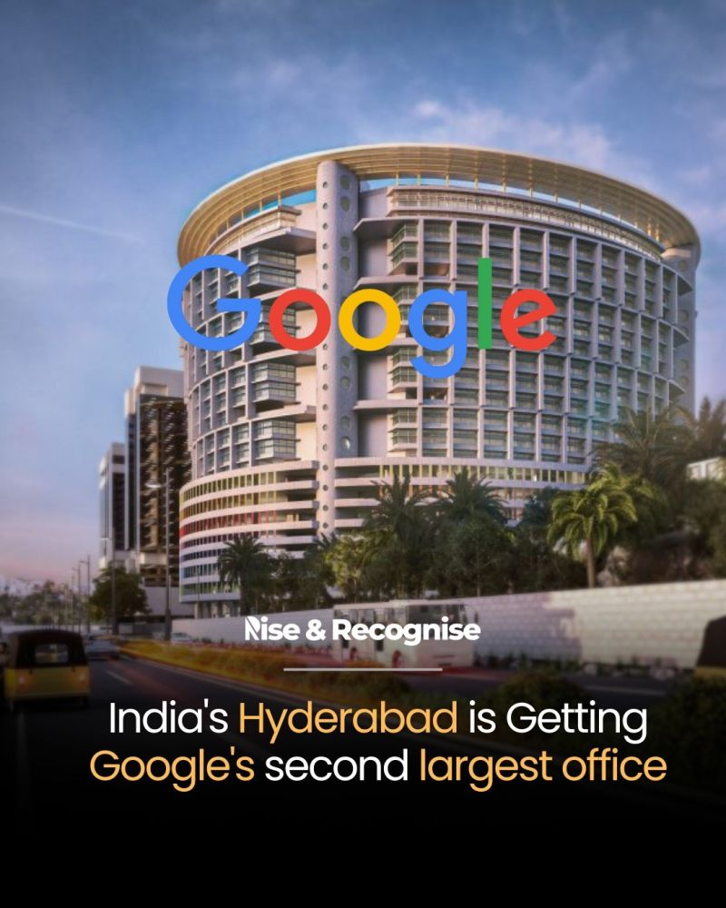
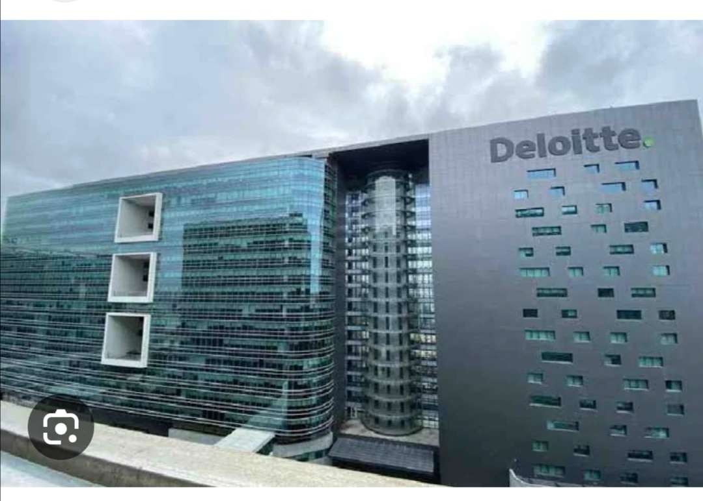

Hyderabad hosts over 1,500 established IT and software companies, making it one of the largest and fastest-growing technology hubs in India. The city's massive tech ecosystem is divided between major global product-based multinationals, massive Indian IT service exporters, and expanding Global Capability Centers (GCCs).
Microsoft

The Microsoft India Development Center (IDC) in Hyderabad is the company's largest R&D facility outside its Redmond, US headquarters. The sprawling 54-acre smart campus drives global product engineering and innovation for core services like Azure, Windows, and Office.Azure Cloud Platform: Engineers scale cloud infrastructure, data management systems, and advanced AI services.Windows Ecosystem: Teams design core operating system features, security patches, and user experiences.Developer Tools: Groups build software frameworks, compiler technologies, and cloud-native applications.Microsoft 365: Development focuses on collaboration tools, enterprise security, and productivity services.

As a global talent hub for technology, Hyderabad is home to one of our largest employee bases in India. Google’s Hyderabad office was established in 2004 and houses many teams from Engineering and Cloud to Trust & Safety and Google Ads, making it an exciting location to do impactful work. Googlers at Hyderabad thrive on innovation and cross functional collaboration, and are a close knit community that embraces diverse cultures and ideas. Our Culture Clubs, comprising of hobby groups like theater, movie, book, sports, dance, and music, keep Googlers engaged.
Deloitte

Deloitte in Hyderabad is one of the firm's largest hubs in India, housing a massive team of professionals focused on consulting, audit, risk advisory, tax, and financial services. The primary campus is located at the sprawling Deloitte Towers in Gachibowli.Deloitte is one of the "Big Four" accounting organizations and the largest professional services network globally by both revenue and employee count. The Hyderabad operation acts as a major strategic center for the Deloitte US-India (USI) offices. It provides end-to-end management consulting, AI engineering, data analytics, tax support, and financial advisory services to global Deloitte member firms and their clients
Tech Mahindra

Tech Mahindra is a leading Indian multinational information technology (IT) services and consulting company. As part of the massive Mahindra Group, the company provides digital transformation, consulting, and business re-engineering solutions to global enterprises. It employs over 150,000 professionals across 90+ countries, delivering core services in telecom, cloud computing, cybersecurity, artificial intelligence, and engineering R&D